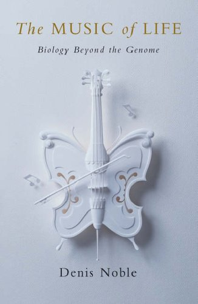

 "Музыка жизни" ("Music of Life", Denis Noble) — серьезная и в то же время написанная для неспециалистов книга про сложность биологической науки и те преграды, которые мы встретили с развитием данной области знания. Автор книги, Денис Ноубл, является весьма значительной фигурой в области физиологии и клеточной биофизики (если Вам доводилось когда-нибудь изучать физиологию сердца на клеточном уровне, Вы наверняка слышали, что одной из первых моделей сердечной клетки была модель Ноубла). Сквозь книгу проводятся параллели биологии с музыкой и иногда лингвистикой (автор использует китайский и другие восточные языки). Это — выбор автора, который мы не смеем критиковать, и через него открывается совершенно новый взгляд на биологическую дисциплину. Однако наиболее важным является констатирования факта того, что современная молекулярная биология и генетика не могут справиться с неимоверным количеством информации, поступающей со всех уголков Земного шара, со всех сколько-нибудь серьезных лабораторий. В эту эпоху преобладания данных над знанием появляется новая дисциплина — системная биология, которая призвана навести порядок в хаосе данных, используя весь имеющийся аппарат других дисциплин (например, математики) с сопутствующим изменением и адаптацией этих дисциплин к своим нуждам. Зачатки этой новой области биологии появились с приходом холистического понимания жизни, понимания того, что целое не есть сумма его составляющих, что целое — нечто большее, дающее новые свойства и качества.
На каком-то этапе мы думали, что гены определяют все. Они отвечают за цвет глаз, длину волос, прочие вторичные характеристики, которые все любят упоминать, перечисляя достоинства или недостатки своих предков. Все эти простые выводы имеют основанием глубокое верование (подчеркиваю это слово, так как дальнейшие открытия показывают, что это не совсем правда) ученого сообщества, появившееся где-то на заре генетики (конце XIX - начале XX), о том, что один ген отвечает за один внешний (да и любой другой) признак организма [1]. Позднее это трансформировалось в принцип "один ген — один белок", что по сути не очень-то отличается от предыдущего верования [2].
Совершенно ясно, что это — популярная догма, повторяемая каждый день в средствах массовой информации и (внимание!) многими учеными и которая основывается на одной грубой ошибке... Андре Пишо называет это ДНК-мания. Это обман думать, что ДНК служит причиной жизни в том же самом смысле, что и компакт-диск служит причиной моего переживания музыки Шуберта... [3]
Далее продолжает Ноубл:
Причинность кажется абсолютно однонаправленной. ДНК дает белки, белки формируют клетки и т.д. (до ткани, органа и целого организма — автор). Организм сам по себе является тем, что мы видим. Все, что происходит на самом деле, так это информация, закодированная в генах, экспрессируется. На биологическом языке: фенотип "создается" генотипом. История кажется соблазнительной. [4]
Данное верование, что причина и следствие сменяются и идут в одном направлении от самого низшего уровня организации — генов — до наивысшего — организма и даже сообществ — является центральной позицией редукционизма (кто-то скажет, философская школа, а кто-то — лишь гипотеза, которая не одержала верх в биологии) [5].
Не вдаваясь в подробности, мы можем продолжить: конечное число генов не определяет всю "кухню" жизни, и только функциональные единицы живого могут претендовать на эту роль [6]. Такими единицами, судя по всему, могут являться белки, которые настолько разнообразны по своим свойствам и функциям [7], что все сколько-нибудь значимые детали организации живой материи имеют в своем составе белки. Вдобавок белковая структура не является чем-то, что определено со 100%-вероятностью кодом соответствующего гена. Например, белок претерпевает значительные изменения уже после считывания кода гена, который определяет лишь так называемую первичную последовательность белка, то есть его элементарный состав.
Каждый белок в свою очередь является элементарным звеном в более сложной сети взаимодействий с другими белками и молекулами. Эта сеть поистине огромна. Взаимодействие белков так или иначе определяет биологическую функцию. Представьте, что каждый белок имеет взаимодействие лишь с одним другим белком, давая одну специфическую функцию. Оценки количества генов в человеке дают число около 30000. Допустим также, что каждый ген дает один белок. Таким образом геном размером в 30000 генов будет иметь (30000 x 29999)/2 = 449 985 000 парных взаимодействий или, в нашем случае, функций [8].
Будучи более реалистичным, автор вспоминает о клетках ритмоводителях сердца, задающих ритм колебаний всех остальных клеток этого органа. Минимальный набор, необходимый для моделирования поведения этих клеток, — около 100 функциональных белков. Предположим теперь, что 100 генов нужны для образования одной функции. Сколько функций возможно в геноме из 30000 генов? Ответ колоссальный: 10 в 289-й степени (то есть 10289).
Если мы позволим любой (!) комбинации белков образовывать одну биологическую функцию, тогда получим число 2x1072403 [9]. Это число с более чем 70000 цифрами. Только запись этого числа составила бы более 30 страниц печатного текста.
И далее:
В действительности же белки не единственные игроки на поле жизни и ее функций. Ведь существует множество других типов и классов молекул, совсем не кодируемых геномом и тем не менее играющих важную роль в функционировании живой клетки.
С точки зрения системной биологии геном не понимается как "книга жизни" до тех пор, пока он не прочитан и не "переведен" на язык физиологической функции. Моя позиция такова, что эта функциональность не находится на уровне генов. Она и не может там находиться, так как, строго говоря, гены слепы в том, что они делают, так же как, безусловно, белки и структуры более высокого порядка, такие как клетки, ткани и органы.
К этому я хотел бы добавить еще два важных пункта. Белки не единственные молекулы в биологических системах, которые определяют функцию. Функция также зависит от свойств воды, липидов и многих других молекул, которые не кодируются генами.
Более того, многое из того, что делают белки, не зависит от инструкций, исходящих от генов. Так, многие функции определяются скудно изученными свойствами сложных химических систем, характеризующихся самосборкой. Это похоже на то, как гены определяют компоненты компьютера, но не имеют инструкций по сборке этих компонент в рабочую машину. Эти компоненты делают то, что химически свойственно им. [12]
Таким образом, геном не является "книгой жизни". Многие элементы среды (вода, состав жиров, химические взаимодействия между молекулами) не могут быть закодированы в генах организма. Организм берет их "как есть" и использует [13].
В дополнение к теме.
Организмы не произведены просто согласно набору инструкций. Не существует простого пути разделения между инструкциями и процессами, их исполняющими, различения плана от претворения его в жизнь. (Энрико Коен, цитата из книги.) [15]
Если компьютер делает что-нибудь умное, как живой, скажем, играет в шахматы, и мы спрашиваем, как он это делает, мы не хотим слышать ничего про транзисторы, мы принимаем их... Нам нужно объяснение их поведения на программном (не низшем физическом) уровне. Я не имею в виду то, что животные обязательно работают, как компьютеры. Они могут быть очень даже отличными от компьютеров. Однако, также как низший уровень объяснения не всегда приемлем для компьютера, он не может быть более приемлем для животного. И животные и компьютеры являются настолько сложными системами, что что-то на программном уровне объяснения должно соответствовать им. (Ричард Докинс, 1976. Цитата из книги.) [16]
«Разве не видит человек, что Мы сотворили его из капли [в которой слились сперматозоид с яйцеклеткой, причем на таком уровне, который невооруженным взглядом и не увидеть], а смотришь — он превратился в явного спорщика [«аргументировано» отрицающего Бога, постулаты веры или рассуждающего о том, есть Он, Творец, или Его нет]?! Забыв о том, откуда и как появился на свет, он приводит Нам примеры [старается обосновать свои суждения], говоря: "Кто сможет оживить истлевшие кости?!" Ответь: "Оживит их тот, Кто изначально дал им жизнь. Он знает обо всем сотворенном [без ограничений во времени и пространстве]" [17]. Он тот, Кто сделал для вас огонь из зеленого дерева. Вы ведь из него разжигаете [костер]! [Призадумайтесь] разве не в состоянии Сотворивший небеса и Землю создать подобное еще раз?! Конечно же [для Него это не составит ни малейшего труда]! Ведь Он — Могущий сотворить все, что пожелает [Его возможности в творении ничем не ограничены], и Всезнающий. Его повеление, когда пожелает Он что-то [все что угодно!], — лишь сказать "будь", и это [без промедлений и затруднений] непременно будет. Выше всего и вся тот, в Чьей руке (под Чьим управлением) полное властвование абсолютно всем. И к Нему вы будете возвращены». (Св. Коран 36:77-83, перевод Ш. Аляутдинова)
[1] Сколько лет прошло с того времени? А люди нашего поколения до сих пор, сидя на семейных торжествах, с умным видом заявляют, что, мол, у кого-то "гены такие"! Пускание подобных верований-слухов в массы из научного сообщества — преступление, сводящее простых людей с дороги правды. "Семь раз отмерь — один раз отрежь", — гласит народная мудрость. Спекуляции в науке не для широкой публики.
[2] "Геном — это все хромосомы клетки. Хромосома — длинная молекула ДНК и некоторые ассоциированные с ней белки. Она разделена традиционно на гены. Ген — участок ДНК, используемый для синтеза определенного белка." (Д. Ноубл, "Музыка жизни", здесь и далее перевод авторский). Оригинальный текст: "The genome is all the chromosomes in a cell. A chromosome is a long DNA molecule and some associated proteins. It is conventionally divided into genes. A gene is a section of DNA that is used in producing a particular protein."
[3] Д. Ноубл, "Музыка жизни". Оригинальный текст: "Indeed, there is a popular dogma that is reinforced daily in the media — and, it must be said, by many scientists — that rests on a crude mistake, just like the Silmans'. Andre Pichot has called this DNA-mania. It is the delusion that the DNA code 'causes' life in much the same way as the CD 'caused' my experience of the Schubert piano trio."
[4] "The causality seems to be entirely one-way. The DNA causes the proteins, the proteins cause the cells, and so on. The organism itself is just what shows on the outside; what is really happening, the inside story, is that the information coded in the genes is being expressed. In biologist-speak, the phenotype is 'created by' the genotype. The story is seductive." История кажется соблазнительно чарующей, а главное логичной. Опять мы видим пример "рассказывания истории", о котором мы много говорим на страницах данного проекта (см., например, Факты бывают разные). История эта не имеет (!) отношения к истине, но все равно рассказывается.
[5] Редукционизм — учение о том, что целое можно понять, изучив поведение составляющих его элементов. Даже простые физические и математические модели с легкостью доказывают, что в системе одинаковых и взаимодействующих элементов появляются совершенно новые свойства, не характерные отдельным элементам. В биологии наличие белков (транскрипционных факторов), обслуживающих ДНК и регулирующих процесс считывания с нее, уже свидетельствует о несостоятельности редукционистского подхода, так как тем самым вводится обратная связь с более высокого уровня (белок) на низший (гены) и однонаправленность исчезает, так же как и изолированность отдельных уровней, а, следовательно, модульное (редукционистское) описание становится несостоятельным. Подробнее этот вопрос изложен, например, в книге Дж. Шапиро, "Эволюция: взгляд из 21-го века" (J. Shapiro, "Evolution: a view from the 21-st century").
[6] Гены — это простые последовательности ДНК, то есть обычный код. Как и любой другой код (например, электронной программы), он не может работать и проявляться без соответствующего интерпретатора, среды исполнения, в которой код понимается и имеет значение, да и того, кому этот код нужен. Код сам по себе не имеет значения без вышеобозначенных элементов.
[7] Кстати сказать, это разнообразие белков известно человечеству издавна. Именно поэтому роль элементов наследственности изначально пытались приписать белкам.
[8] Этот и последующие примеры взяты из книги (глава "Геном и комбинаторный взрыв"/"The genome and combinatorial explosion").
[9] см. Feytmans, E., Noble, D., and Peitsch, M. (2005). Genome size and numbers of biological functions. Transactions on Computational Systems Biology, 1, 44-49.
[10] В оригинале: "These numbers are so large that there wouldn't be enough material in the whole universe for nature to have tried out all the possible interactions, even over the long period of billions of years of the evolutionary process. Given their enormity, and their physical impossibility, they have no realistic physical meaning."
[11] "It is clear that nature has had vastly more theoretical possibilities than are actually manifested in existing species."
[12] "From a systems biology viewpoint, the genome is not understandable as 'the book of life' until it is 'read' through its 'translation' into physiological function. My contention is that this functionality does not reside at the level of genes. It can't because, strictly speaking, the genes are 'blind' to what they do, as indeed are proteins and higher structures such as cells, tissues, and organs. To these I want now to add two more important points. Proteins are not the only molecules in biological systems that determine function. Function is also dependent on the properties of water, lipids, and many other molecules that are not coded for by genes. Moreover, a lot of what their products, the proteins, do is not dependent on instructions from the genes. It is dependent on the poorly understood chemistry of self-assembling complex systems. It is as though the genes specify the components of a computer, but not how they should be put together. They just do this by doing what is chemically natural to them."
[13] Так же и человек-ученый берет и использует то, что имеется, в своих исследованиях. Поэтому любые заявления о том, что мы создали клетку якобы из ничего, создав искусственный геном, или о том, что мы знаем, как зародилась Вселенная как минимум беспочвенны, до тех пор пока кто-нибудь не создаст Вселенную в лаборатории из "ничего", а уж потом жизнь с характерными для нее клетками, тканями и т.д. Таков метод науки: если я знаю, как работает колесо, я иду и создаю велосипед, если я знаю, как работает клетка, я иду и создаю всю (!) клетку полностью. Мы поставлены в определенные условия — наш мир. Если условия меняются, меняется и все знание мира. Ограниченные в воображении ученые любят на всем ставить точку "полной ясности", тогда как в поисках настоящей истины человек пытается избежать ощущения полной ясности.
[14] "... we inherit the world. The peculiar chemistry of water, lipids, and many other molecules whose form and properties are not coded for by DNA — all that is given. And yet the central biological dogma of our times is that inheritance is solely through DNA!"
[15] "Organisms are not simply manufactured according to a set of instructions. There is not easy way to separate instructions from the process of carrying them out, to distinguish plan from execution." (Enrico Coen)
[16] "If a computer is doing something clever and life-like, say playing chess, and we ask how it is doing it, we do not want to hear about transistors, we accept them... We need software explanations of behaviour. I do not mean that animals necessarily work like computers. They may be very different. But just as the lowest level of explanation is not always the most appropriate for a computer, no more is it for an animal. Animals and computers are both so complex that something on the level of software explanation must be appropriate for both of them." (Richard Dawkins, 1976)
[17] Примечательно, что люди раньше думали, что человек находится полностью "готовым" в чреве своей матери. И со временем он лишь разрастается в размере. Таковы были представления, например, в Древней Греции. Св. Коран еще более 14 веков назад дал понять человеку, что кости его сотворены, то есть это активный созидательный процесс. Напомню, что Европа тогда пребывала в так называемых Темных Веках: никаких своих представлений вообще не было, а древние греки были напрочь забыты. Знания вообще не было в умах людей, оно имелось лишь только в древних манускриптах.